Girugía
Dr. Arturo Valdés
Cuenta con diferentes cursos nacionales en el extranjero, entre los que destacan:Es Cirujano General en Laparoscopía Avanzada. Está Certificado por el Consejo Mexicano de Cirugía General, y por el Consejo Mexicano de Cirugía de Obesidad y Enfermedades Metabólicas.
El doctor tiene estudios en el Centro Excelencia para el Estudio y Tratamiento de la Obesidad en Valladolid, España, a cargo del profesor Dr. Miguel Ángel Carbajo Caballero.
También en “Manejo Quirúrgico y Multidisciplinario De La Obesidad” por la Universidad Nacional Autónoma de México.
Cuenta con un Diplomado en Nutrición Bariátrica, avalado por la Federación Internacional para la Cirugía de Obesidad y Enfermedades Metabólicas.
Es director y fundador de Bariatric Solution, Centro Bariátrico del Hospital Christus Muguerza Saltillo.
Ha sido pionero en México de la Técnica BAGUA (cirugía para la obesidad y la diabetes), y recientemente fue invitado a participar como experto en el Primer Consenso Mundial BAGUA.
Es orgullosamente miembro de:
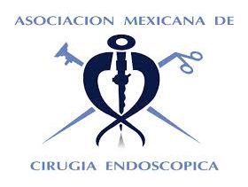
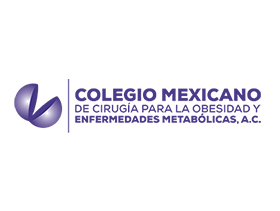
 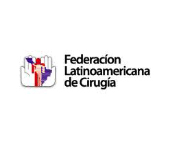
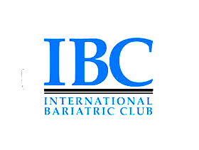
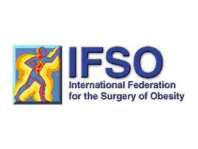
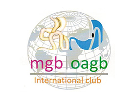
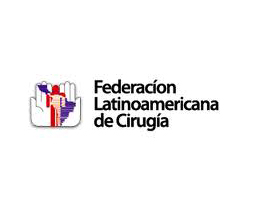
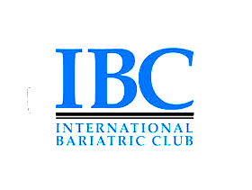
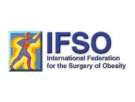
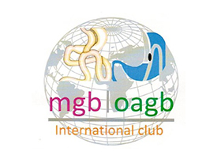
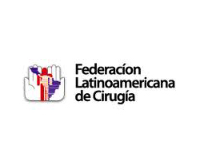
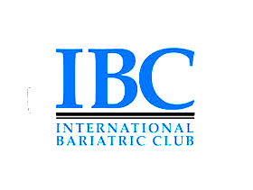
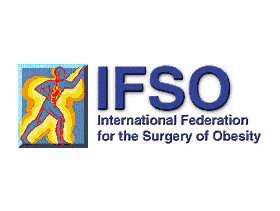
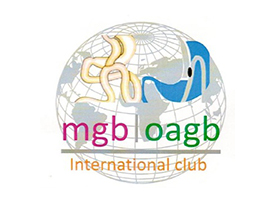

Dra. Ivon Ruiz Burciaga
Medicina Interna y Terapia Intensiva
- Egresada como Médico Cirujano de la Universidad Juárez del Estado de Durango
- Especialidad en Medicina Interna por la Universidad Autónoma de Nuevo Leon.
- Subespecialidad en Medicina del Enfermo en estado Crítico por el Instituto Tecnológico y de Estudios Superiores de Monterrey.
- Certificada por el Consejo Mexicano de Medicina Interna y el Consejo Mexicano de Medicina Critica A.C.
- Miembro del cuerpo Médico del Hospital Christus Muguerza Saltillo.

Dr. Rodrigo Gutiérrez Udave
Gastroenterólogo
- Subespecialidad en Gastroenterología por el Hospital Universitario UANL
- Alta Especialidad en Endoscopia Digestiva Avanzada en el Hospital Universitario UANL
- Certificado por el Consejo Mexicano de Medicina Interna
- Certificado por el Consejo Mexicano de Gastroenterología
- Certificado por el Consejo Mexicano de Endoscopia Digestiva
- Certificado para la Implantación de Balón Intragástrico.

Dr. Gabriel Cruz Zorrilla
Médico Cirujano egresado de la Universidad de Monterrey, graduado con honores y precio Cum Laude, internado de pregrado en el Hospital General de Zona #33 del IMS, posgrado de Otorrinolaringología y Cirugía de Cabeza y Cuello, avalado por la UNAM, en el Instituto Nacional de Rehabilitación (INR). Estancia Formativa en el departamento de Otorrinolaringología, en la Clínica Universidad de Navarra, Pamplona, España, con posgrado en medicina del sueño en la misma universidad. Primer lugar en el examen de certificación del Consejo Mexicano de Otorrinolaringología y Cirugía de Cabeza y Cuello. Alta especialidad en Trastornos Respiratorios del Dormir, avalado por la UNAM, realizado en la Clínica de Sueño del Instituto Nacional de Enfermedades Respiratorias (INER).
- Sociedad Mexicana de Otorrinolaringología y Cirugía de Cabeza y Cuello.
- Federación Mexicana de Otorrinolaringología y Cirugía de Cabeza y Cuello.
- Academia Mexicana de Medicina del Dormir.
- Colegio de Otorrinolaringología de Coahuila.
- Academia Americana de Otorrinolaringologia y Cirugia de Cabeza y Cuello.
Pertenece al Colegio Mexicano de Cirugía para la Obesidad y Enfermedades Metabólicas A,C.

Lic. Sofía Carolina Oranday Gallegos
Nutrióloga
- Egresada de la Universidad Autónoma de Nuevo León
- Asesora Nutricional en enfermedades del Corazón, Hipertensión, Síndrome Metabólico, Diabetes, Embarazo y Lactancia
- Diplomado en Nutrición Especializada en Cirugía de Obesidad, Avalado por el Colegio Mexicano de Cirugía de la Obesidad en México.

Lic. Melissa Sánchez Álvarez
Psicóloga Bariatra y Terapeuta Familiar
- Egresada de la Universidad del Valle de México
- Maestría en Terapia Familiar Sistémica por la Universidad Autónoma del Noreste
- Diplomado en Psicología Bariátrica del Instituto de Investigación y Educación de Ciencias de la Salud, Avalado por la International Federetion for the Surgery of Obesity an Metabolic Disorders (IFSO)
- Diplomado en Evaluación con Pruebas de Diagnóstico Clínico de la Universidad Autónoma de Nuevo León.
Pertenece al Colegio Mexicano de Cirugía para la Obesidad y Enfermedades Metabólicas A,C.
Dr. Enrique de los Santos Valdés
Cirugía General y Laparoscopía Avanzada y Partero por la Universidad de Monterrey
Cédula Profesional: 4760223
Cédula de Especialidad: 8566400
Cuenta con diferentes cursos nacionales en el extranjero, entre los que destacan:
- “Advanced Laparoscopic Surgery Proctorship” Septiembre 2010. Texas Endosurgery Institute. San Antonio, TX.
- “Advanced Laparoscopic Surgery Proctorship” Octubre 2011. Texas Endosurgery Institute. San Antonio, TX.
- “Laparoscopic General Surgery Intensive Course” Septiembre 2013. European Institute of Telesurgery, Université de Strasbourg. Estrasburgo,FRA.
Se encuentra Certificado por el Consejo Mexicano de Cirugía General ”
Dr. José Alberto Martínez
Especialista en Anestesiología por el Hospital de Alta Especialidad #25 IMSS en Monterrey N.L Certificado y recertificado por el Consejo Mexicano de Anestesiología.
Cédula Profesional: 1082286
Cédula de Especialidad: 3356678
Con Amplia experiencia avanzada en el manejo de la vía aérea de pacientes con obesidad. Egresado en la especialidad de Anestesiología del Hospital Fernando Quiroz Gutiérrez ISSSTE-UNAM México D.F. Certificado y Recertificado por el Consejo Mexicano de Anestesiología
- Médico de Staff en Hospital Christus Muguerza Saltillo y Médico anestesiólogo.
- Coordinador del servicio de Anestesiología
- Miembro y Fundador del Colegio de Médicos Anestesiólogos del Estado de Coahuila,
- Coordinador de Enseñanza y Presidente en periodo 2001—2003.
Se encuentra Certificado por el Consejo Mexicano de Cirugía General ”
Dr. Enrique Silva Flores
Especialista en Anestesiología

Dr. Cristian González
Medico Internista
Enf. Aimee Suárez Espinoza
Enfermera quirúrgica Bariatrica, con más 15 años de experiencia en procedimientos médico quirúrgicos avanzados, así como cuidados de enfermería en preoperatorios, transoperatorios y postoperatorios.
- Egresada del Instituto De Enfermería Josefa Medina De Valle Arizpe. (CRUZ ROJA Mexicana), Saltillo Coahuila.
- Diplomado en Enfermería Bariátrica. Avalado por la International Federation For The Surgery Obesity and Metabolic Disorders (IFSO).
- Hospital Rubén Leñero México D.F
- Instituto de Investigación y Educación de Ciencias de la Salud.
- Enseñanza Virtual de La Salud Envirsa México D.F
- Egresada de la Escuela de Enfermería de Monterrey (UDEM).
- Especialidad de Enfermera Quirúrgica.

Dra. Erendira León
Cédula Profesional: 6067301
Dra. Erendira León Preparadora Física – Terapia Física Bariátrica – Entrenador Personal. Con 13 años de experiencia, ha realizado diversos estudios y ponencias como:
- 3er Simposium de Nutrición Pediátrica “Cambiando su futuro”. Taller: Actividad Física en la Infancia. Universidad Autónoma del Noreste. Saltillo Coahuila. 21 de Noviembre 2015
- 2do Simposium de Nutrición y Deporte. Ponencia: Métodos de entrenamiento, mitos y realidades. Taller de Antropometría y Activación Física en Poblaciones Específicas. Universidad Autónoma del Noreste. Saltillo Coahuila. 28 y 29 de Noviembre 2014
- Décimo Congreso de Educación Física. Curso Taller “Nutrición y Métodos de Entrenamiento para Docentes”. Saltillo Coahuila. Marzo 2012
- SEP.- Gira por el Estado de Coahuila. Capacitación estatal a los Profesores encargados de los Centros Escolares de Orientación y Prevención Contra la Obesidad. Noviembre 2011.
- Jornada de Profesionalización de Figuras Educativas de la Educación Física “Redescubriendo la Educación Física como recursos fundamentales para el aprendizaje” Ponencia de “Planificación del entrenamiento deportivo en la Educación Física”. Agosto de 2011. Saltillo, Coahuila.
- Primer Simposium de Medicina del Deporte “Tlatoani Cayetano Garza Garza”. Facultad de Organización Deportiva, U.A.N.L. Exposición del tema “Casos para llamar a los paramédicos”. 14 de Noviembre de 2005.
- XXIII Congreso Nacional de Investigación Biomédica. Facultad de Medicina, U.A.N.L. “Máxima Lacticidemia Competiciones de 100m, 200m y 400m Curso Largo. Estudio de Contraste”. 27 al 29 de Octubre de 2005.
- XXIII Congreso Nacional de Investigación Biomédica. Facultad de Medicina, U.A.N.L. “Estudio Comparativo de Glicemia y Peso Corporal En Programa de Ejercicio y Diabetes Mellitas”. 27 al 29 de Octubre de 2005.
Es Miembro activo del Colegio Mexicano de Cirugía para la Obesidad y Enfermedades Metabólicas y de la Organización Exercise is Medicine México.